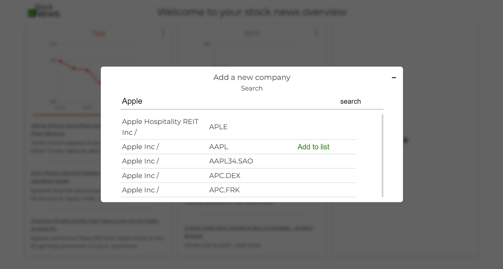

side project
2022
In order to gain more experience with REST APIs and TypeScript I wanted to implement
a project that uses these two but also is of my interest instead of just following along
a tutorial. In the sense of "scratch your own itch" - Tim Ferriss, I implemented this stock
news dashboard that fetches the latest stock prices of the last five days as well as the
latest news about that company. Companies can be added via a search field that
provides you with options of the term you are searching for. I first used the
an API from Finnhub but settled with one from AlphaVantage since they offered
everything I needed.
Design process:
Drafted out what basic functionalities I wanted
Researched about API's that fit the requirements
Sketched out visual design ideas with Lunacy
Turned the visual mockup into a prototype
Software and technologies used:
Vite, Vue 3, TypeScript, HTML + CSS, VS code and Lunacy
Lessons learned:
The project helped me to expand my knowledge of the structure and
behaviour of REST APIs. In the future, I'll make sure to take my time choosing the right API
before having to invest time again to restructure code later along the line if another
API fits better.
Next steps if I were to continue development:
- Extend the data structure to check if the latest fetched data is still new
and only fetch new data if that is not the case to save on API calls
- adding the functionality to focus a company panel and see more articles
as well as a stock price graph that dates back to a month / year
Main page of your selected stocks
Search function with results that one can add to the dashboard 